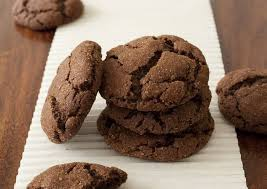

المكوّنات
كوب واحد طحين
- بيضه واحده
- اربع ملاعق كبيره سكر اسمر
- 100 غرام زبده
- ملعقتين كبيرتين سكر ابيض
- معلقتين كبيرتين كاكاو بودرة
- ملعقه صغيره فانيليا
- نصف ملعقه صغيره بيكنج بودر
- رشة ملح
- نصف ملعقه صغيره بيكربونات الصوديوم
الخطوات
- نخلط المكونات الجافه اولا : الطحين، الكاكاو،البيكنج باودر،بيكربونات الصوديوم والملح
- في الخلاط تخفق الزبده مع السكر الابيض والاسمرالى ان يصبح خليط
- تضاف البيضه والفانيليا الى الخليط
- ثم نضيف المكونات الجافه تدريجياً وتخفق جيداً
- بواسطة ملعقة-كبيرة نصنع كرات وتوضع في صينية مغطاة بورق الزبده
- تدخل الفرن على حرارة 180 درجة مئوية لمدة 15 دقيقة، تخرج من الفرن وتترك لتبرد ثم تقدم